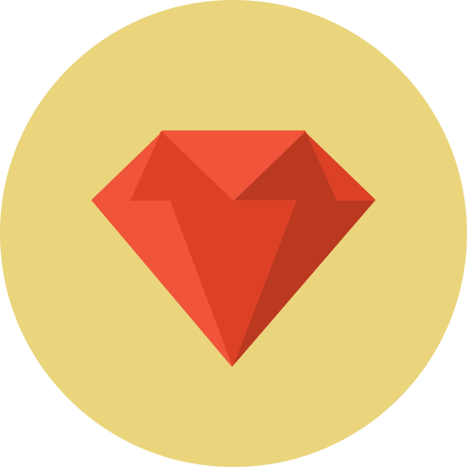

A current software engineer and former mathematics instructor with a passion for travel, yoga, coffee and of course coding.
Why software engineering? First, there is something euphoric about attacking abstract problems in order to find not just answers but elegant solutions. I thrive on the challenge. Second, after years of telling my students to follow their dreams, I decided to follow my own: becoming a web developer. Having specialized in edTech, I watched it transform not only learning outcomes but also the lives of my students. However, I also witnessed inefficiencies and thoughtless programmatic designs that undermined their growth. I wanted to change that -- to create responsive, engaging programs that optimize every second of the user experience. As a software engineer, I look forward to the daily puzzles, intelligent fixes and limitless creativity that will transform the way we learn, connect and live.
Behold my SKILLS
-
 Feature 2
Feature 2  Feature 3
Feature 3-  Feature 4
- Feature 5
 Feature 6
Feature 6- Feature 7
 Feature 8
Feature 8 Feature 9
Feature 9Feature 8
 Feature 9
Feature 9